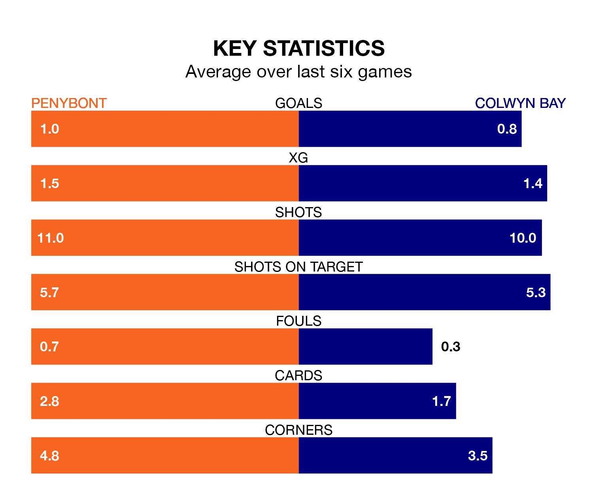

Penybont host Colwyn Bay in Saturday's early match at the SDM Glass Stadium looking to bounce back from defeat last time out in the Welsh Premier League.
Bont, who sit fifth in the league after 27 games, fell to a 0-1 away defeat to Haverfordwest County on March 8.
They face a Colwyn Bay side who secured a draw in their last match, a 1-1 tie with Barry Town United, and who sit zero in the table.
With 30 goals in 27 games so far this season, Colwyn Bay are the league's-3th-lowest scorers with 1.1 goals per game. And they are conceding more than average, letting in 56 goals at a rate of 2.1 per game.
Penybont are also below average scorers, with 1.3 goals per game, compared to a league average of 1.5. They have conceded 1.4 goals per game.
Bont are in mixed form in the Welsh Premier League, with two wins and two draws from their last six games.
With a win and two draws over that period, the away side's form is worse – they have taken five points from 18, compared to the hosts' eight.
In the last three years, Penybont and Colwyn Bay have played each other on three occasions. Penybont won one of them and Colwyn Bay the other.
Their last meeting was on February 3, when Penybont won 2-1 away.
Updated: 15:10 (UTC), 15/03/24